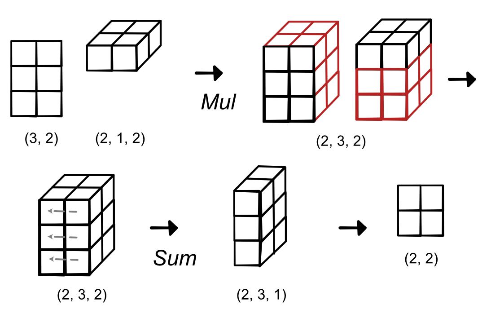

Module 2.3 - Gradients
Module 2.3 - Gradients
Gradients
Tensor Functions
Unary
new_tensor = tensor.log()Binary (for now, only same shape)
new_tensor = tensor1 + tensor2Reductions
new_tensor = tensor.sum()Tensor Ops
Map - Apply to all elements
Zip (same as zipWith) - Apply to all pairs
Reduce - Reduce a subset
Map

Zip
Reduce

Reduction

Reduction

Reduction

Reduction

Outline
Gradients
Challenges
Broadcasting
High Level
Apply same operation multiple times
Avoid loops and writes
Save memory
First Challenge
Relaxing Zip constraints
Apply zip without shapes being identical
Motivation: Scalar Addition
Naive Scalar Addition 1
Repeat vector-size
vector1 + tensor([10, 10, 10])Naive Scalar Addition 2
Write a for loop
temp_vector = zeros(vector1.shape)
for i in vector.shape[0]:
temp_vector[i] = vector1[i] + 10Broadcasting
No intermediate terms
Define rules to make different shapes work together
Avoid for loops entirely
Zip With Broadcasting

Zip With Broadcasting
Code
out = zeros(3, 2)
for i in range(3):
for j in range(2):
out[i, j] = a[i] + b[j]Zip Broadcasting

Rules
Rule 1: Dimension of size 1 broadcasts with anything
Rule 2: Extra dimensions of 1 can be added with view
Rule 3: Zip automatically adds starting dims of size 1
Matrix Scalar Addition
Matrix + Scalar
matrix1 + tensor([10])Matrix Scalar Addition
Matrix + Vector
matrix1.view(4, 3) + tensor([1, 2, 3])Matrix Scalar Addition
Doesn't Work!
matrix1.view(4, 3) + tensor([1, 2, 3, 5])Does Work!
matrix1.view(4, 3) + tensor([1, 2, 3, 5]).view(4, 1)Applying the Rules
(3, 4, 5) | (3, 1, 5) => (3, 4, 5)
(3, 4, 1) | (3, 1, 5) => (3, 4, 5)
(3, 4, 1) | (1, 5) => (3, 4, 5)
(3, 4, 1) | (3, 5) => X
Exercises
(1, 3, 4) | (1, 3, 1) => ?
(1, 4, 4) | (3, 1, 5) => ?
(3, 4, 1) | (1) => ?
Examples
Tensor-Scalar operations

Matrix-vector operations

Matrix-matrix operations

Matrix-Matrix Operations
{kind=link}
Implementation
Never create an intermediate value.
Implicit map between output space / input space
Functions
shape_broadcast - create the broadcast dims
broadcast_index - map from broadcasted to original value
Gradients
Derivatives
Each tensor arg is many args
Returning tensor is like running several Functions
Result backward needs to run chain-rule for each arg and output.
Graph
Terminology
Scalar -> Tensor
Derivative -> Gradient
d_out -> grad_out
Recommendation: Reason through gradients as many derivatives
Gradient
Note -> producing a scalar
Gradient
Each is a standard derivative
Gradient
Tensor of derivatives.
Chain Rule For Gradients
(Not Critical for us)
Avoiding Gradient Math
All of this is just notation for scalars
Can always reason about it with scalars directly
Map Gradient

Zip Gradient

Reduce Gradient